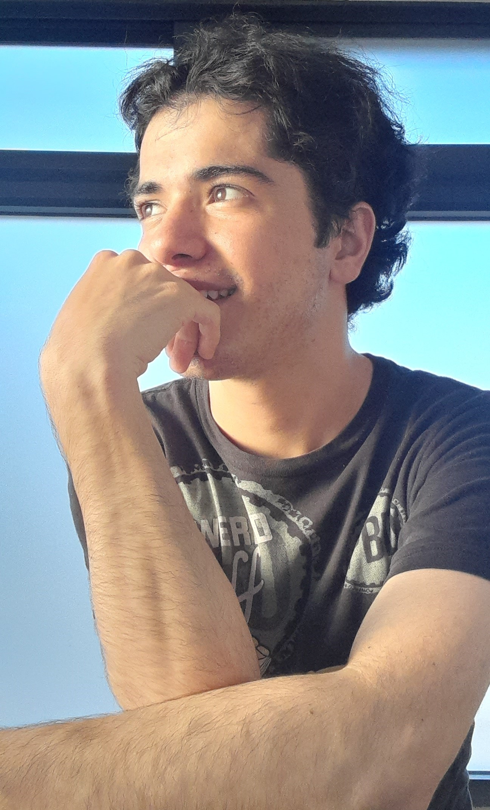

¿Quien soy?
Mi nombre es Sebastian Morelos Ayaquica. Soy un chico de ya casi veintitres años. Vivo en la ciudad de Atlixco, en el estado de Puebla y orgullosamente Mexicano. Nací el veinticuatro de septiembre del año dos mil. Soy Libra con ascendente en Virgo y signo lunar Leo. Me describiría como una persona racional, metódica, organizado, que evita situaciones de estrés y conflictos, pero demasiado sentimental, por lo que no permito ofensas a mi persona y mucho menos a mis allegados.
Mi Familia
Mi familia es de tipo nuclear, conformada por mi padre, mi madre, mis dos hermanos mayores y yo, claramente. La historia de mi familia inicia cuando mis padres se conocieron trabajando juntos, eso fue por haya del año 1993 o 1994. No sé exactamente cuanto tiempo estuvieron trabajando juntos. Lo que si sé, es que mis padres resultaron en un embarazo y eso los llevo a casarse para traer a su hijo en un matrimonio. Aquel primogénito nacería a finales del año 1994. Tres años y medio aproximadamente nació mi hermana. Y dos años después nací yo. Para mis padres fuimos tres sorpresas, eso lo aseguro, ya que después de mí, mi madre se operó para ya no tener más bebes. Dejando así una familia conformada por cinco integrantes en total.
Mi papá
 Mi padre se llama Tomás Morelos Motolinia tiene actualmente cincuenta y dos años de edad. Es un hombre arduamente trabajador. Como padre de familia es responsable solo un poco descuidado en tener cercanía como papá con sus hijos. Es un hombre obstinado, rudo y con un temple muy serio, tanto que todo aquel que lo observa de reojo piensa que está enojado. Pero la realidad, cuando se le conoce bien, es una persona sencilla y relajado, su manera de ser te da seguridad, confianza y la verdad como un amigo es muy bueno.
Mi padre se llama Tomás Morelos Motolinia tiene actualmente cincuenta y dos años de edad. Es un hombre arduamente trabajador. Como padre de familia es responsable solo un poco descuidado en tener cercanía como papá con sus hijos. Es un hombre obstinado, rudo y con un temple muy serio, tanto que todo aquel que lo observa de reojo piensa que está enojado. Pero la realidad, cuando se le conoce bien, es una persona sencilla y relajado, su manera de ser te da seguridad, confianza y la verdad como un amigo es muy bueno.
Mi mamá
 Mi madre, hablar de mi madre es aventar rosas, mirar un amanecer, teniendo la seguridad que será un día perfecto, es que mi mamá es la mujer más bella que pudiera haber conocido. Tiene un porte con tanta elegancia, tanto carisma y su manera de ser, me hace considerarla la mujer más agraciada y simpática que yo haya conocido. Obviamente tiene sus defectos como cada ser humano. Mi madre se llama Mónica Ayaquica Huerta. Tiene actualmente cuarenta y nueve años de edad.
Mi madre, hablar de mi madre es aventar rosas, mirar un amanecer, teniendo la seguridad que será un día perfecto, es que mi mamá es la mujer más bella que pudiera haber conocido. Tiene un porte con tanta elegancia, tanto carisma y su manera de ser, me hace considerarla la mujer más agraciada y simpática que yo haya conocido. Obviamente tiene sus defectos como cada ser humano. Mi madre se llama Mónica Ayaquica Huerta. Tiene actualmente cuarenta y nueve años de edad.
Mis hermanos

Mis hermanos mayores, iniciamos con el mayor, su nombre es Tomás Morelos Ayaquica. Nació el veintiocho de diciembre de mil novecientos noventa y cuatro. Y mi hermana, la hija de enmedio nació el doce de abril de mil novecientos noventa y ocho. Cada uno tiene una edad de veintinueve y veinticinco años respectivamente. Y ambos ya me hicieron tío, mi hermana tiene dos hijos y mi hermano tiene solo uno.
Leer más...
¿Qué me gusta?
Hay demasiadas cosas que me gustan en este mundo. Es tan genial que haya tantas cosas por hacer y conocer y es eso lo que más me gusta, tener opciones. Por una parte me gusta muchísimo la música, casi como a cualquier persona que exista en este plano de la existencia. La verdad es que mis gustos son muy abiertos, pueden gustarme canciones de Música Clásica, Electrónica, Pop, Heavy Metal, Rock and Roll, Boleros, Regional Mexicano, Country, Kpop, Géneros Alternativos de todo prácticamente, solo que me gustan por lo general las canciones que tiene un ritmo muy detonante para mí, hay canciones que a veces no las entiendo en cuanto a su letra, composición y música. A eso me refiero a que me gustan las canciones como más pegajosas y la mayoría de veces son las más populares de cada artista o agrupación.
También me gusta mucho la comida. Me gusta tanto comer, como preparar diferentes platillos. Me fascina ir conociendo nuevos sabores y lo que más me gustaría es iniciar a viajar por el mundo para conocer los sabores típicos de cada región en el mundo. Cuando cocinó me gusta crear algo especial y por lo general lo que más me gusta hacer es la repostería.
Leer más...